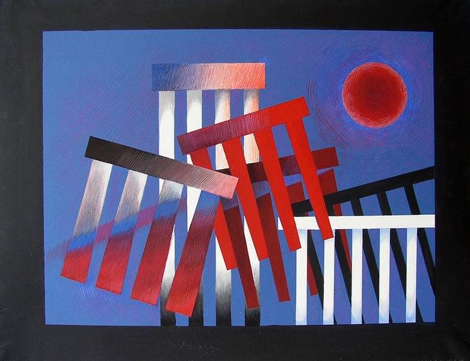
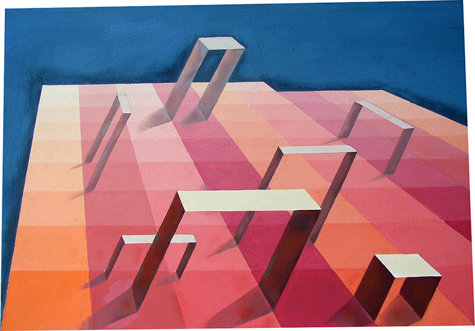
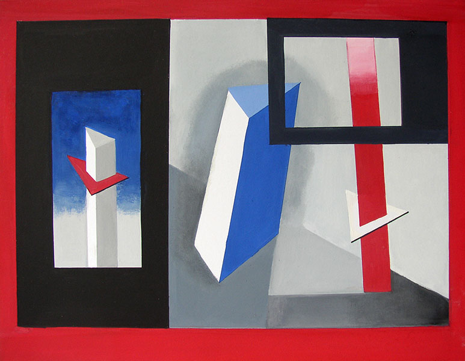
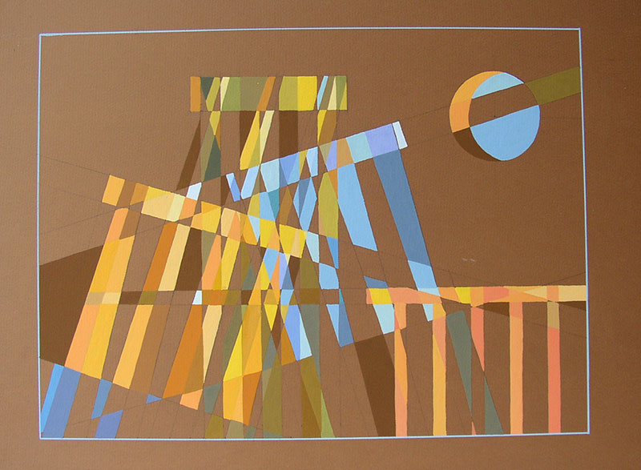
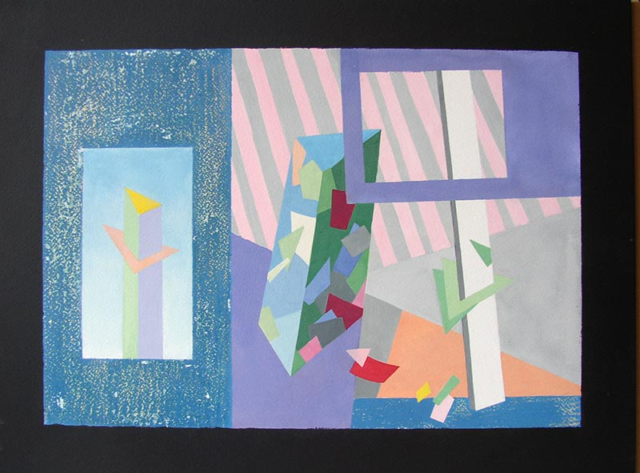
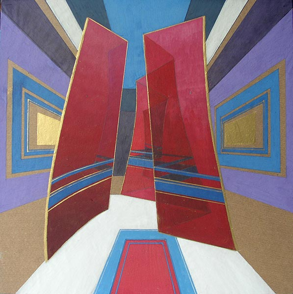
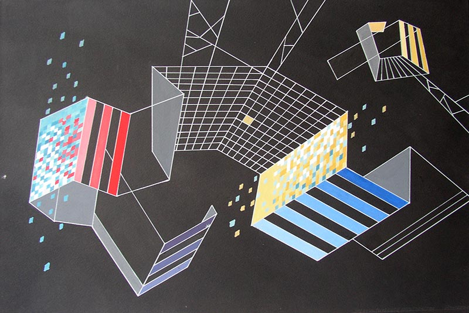

Задание
Взаимодействие формы, пространства и цвета.
Авторы работ: Калацкая Е., Падалко И., Лозовская О., Щиглинская А., Лазарчик Г., Калацкая Е., Ямутеева И.
Просмотр 1 февраля 2006

Лунный свет

Ворота на рассвете

Массы и плоскости

Лунные блики

Натюрморт в стиле дада

«Скиния собрания»

Городские мотивы